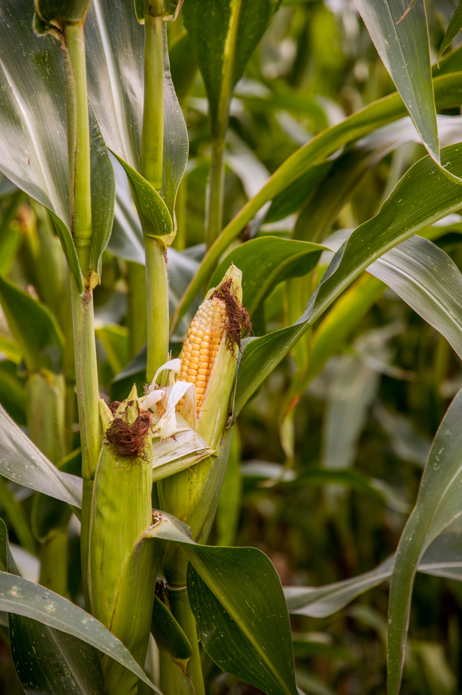

Maïs is een directe domesticatie van de ondersoort Zea mays subsp. parviglumis. Maïs is een eenhuizige plant. De mannelijke bloeiwijze (de pluim) zit aan de top van de stengel en draagt de helmknoppen, de vrouwelijke bloeiwijze (de kolf) bevindt zich aan de bladoksels en bestaat uit een spil met daaromheen een aantal rijen vruchtbeginsels waaruit de korrels ontstaan. Het stuifmeel wordt via de wind meegevoerd naar andere maïsplanten, waar bevruchting plaatsvindt in afzonderlijke korrels.
Maïs is in veel delen van de wereld een onderdeel van het basisvoedsel. De totale wereldwijde productie van maïs werd geschat op 1,05 miljoen ton in 2019 en overstijgt daarmee de productie van tarwe en rijst.
Van al het maïs wordt maar weinig rechtstreeks door de mens geconsumeerd: het meeste wordt gebruikt voor de productie van veevoer, bio-ethanol en bepaalde maïsproducten, zoals maïszetmeel en glucosestroop.
Maïs komt oorspronkelijk uit Midden-Amerika, waar het gewas duizenden jaren geleden door de oorspronkelijke bewoners veredeld werd tot grotere, voedzamere kolven. Zij zochten steeds de beste, lekkerste en grootste kolven uit om de maïs mee voort te planten. Waarschijnlijk zijn ze ooit begonnen met de teosinte, een klein grasplantje. Columbus, die in 1492 Amerika ontdekte, heeft de maïsplant meegenomen naar Spanje, waar het gewas direct goed gedijde. Voor het koudere klimaat hebben de Europeanen de maïs zelf verder veredeld, waarna de plant het in koudere gebieden ook steeds beter ging doen.